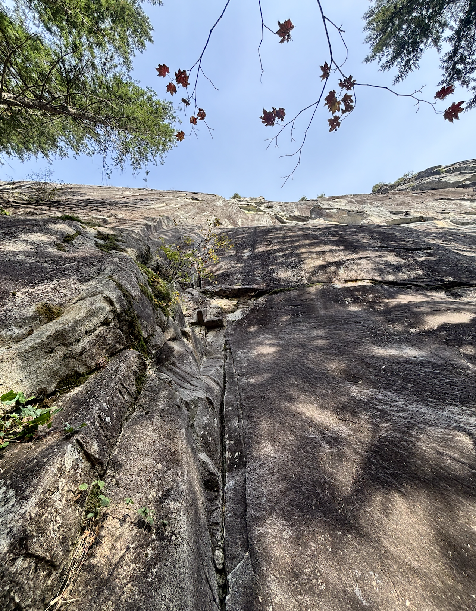
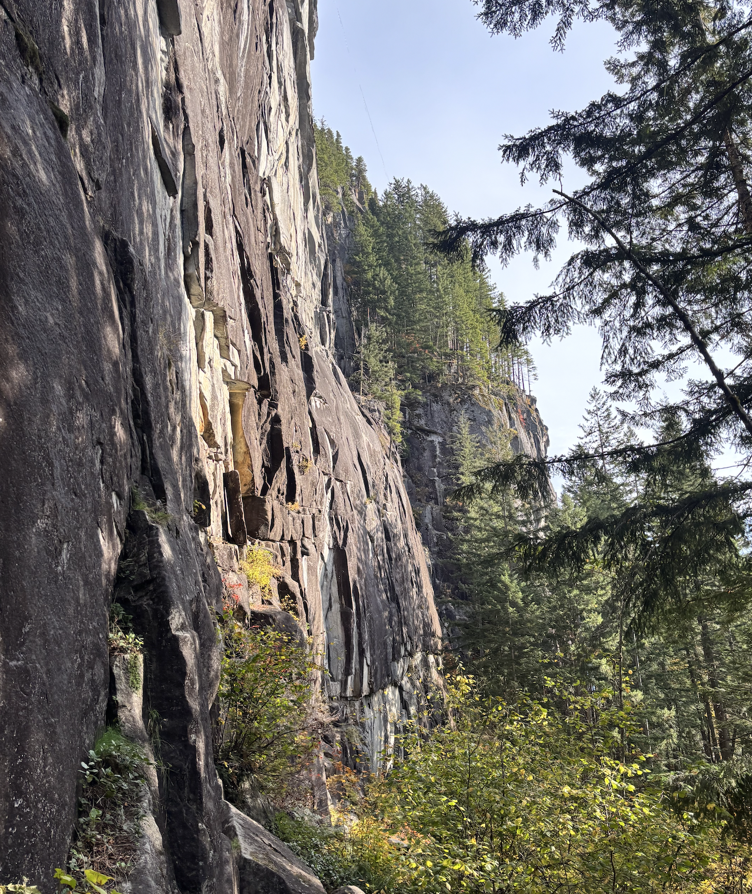
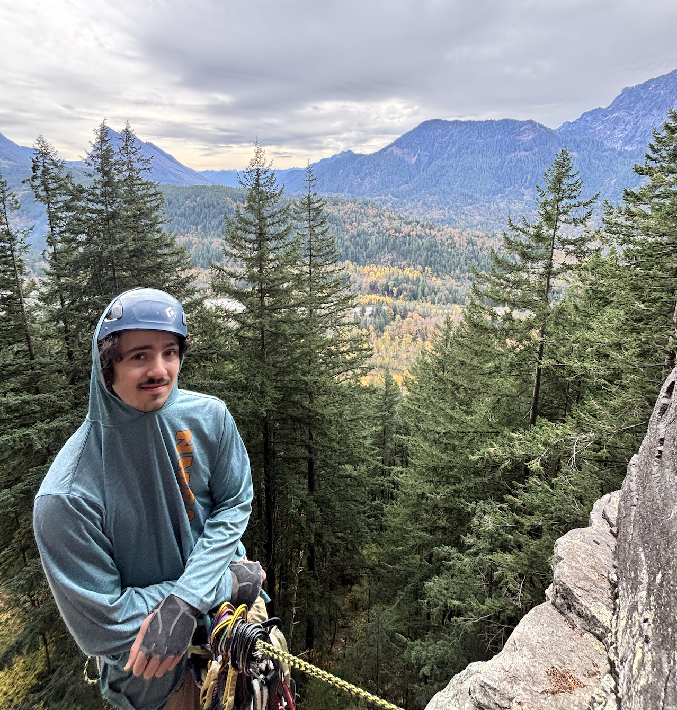
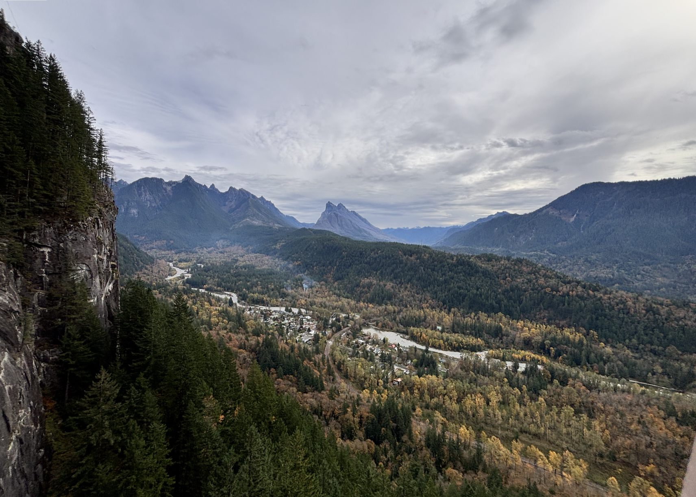
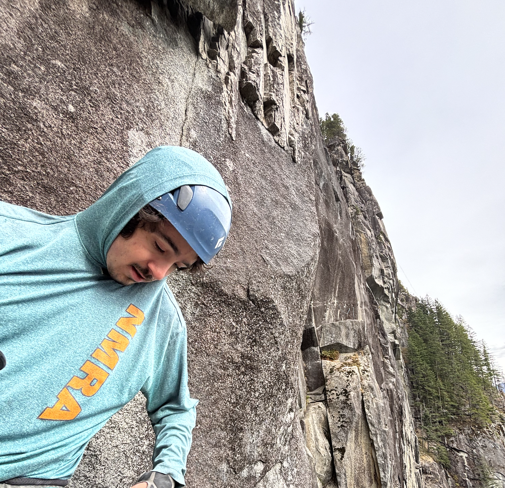
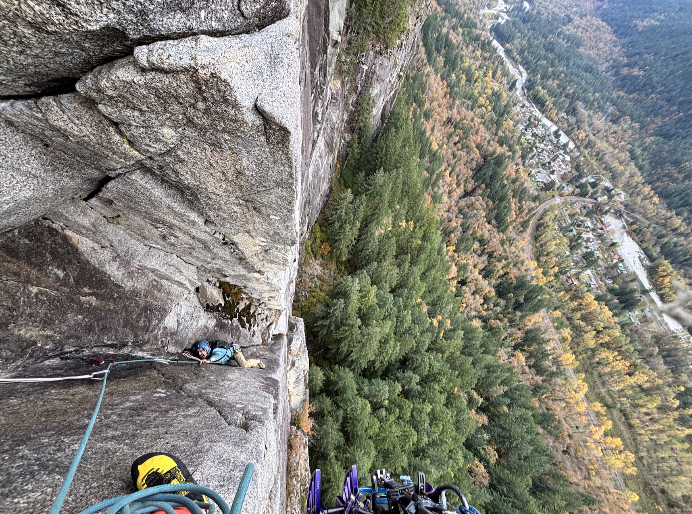
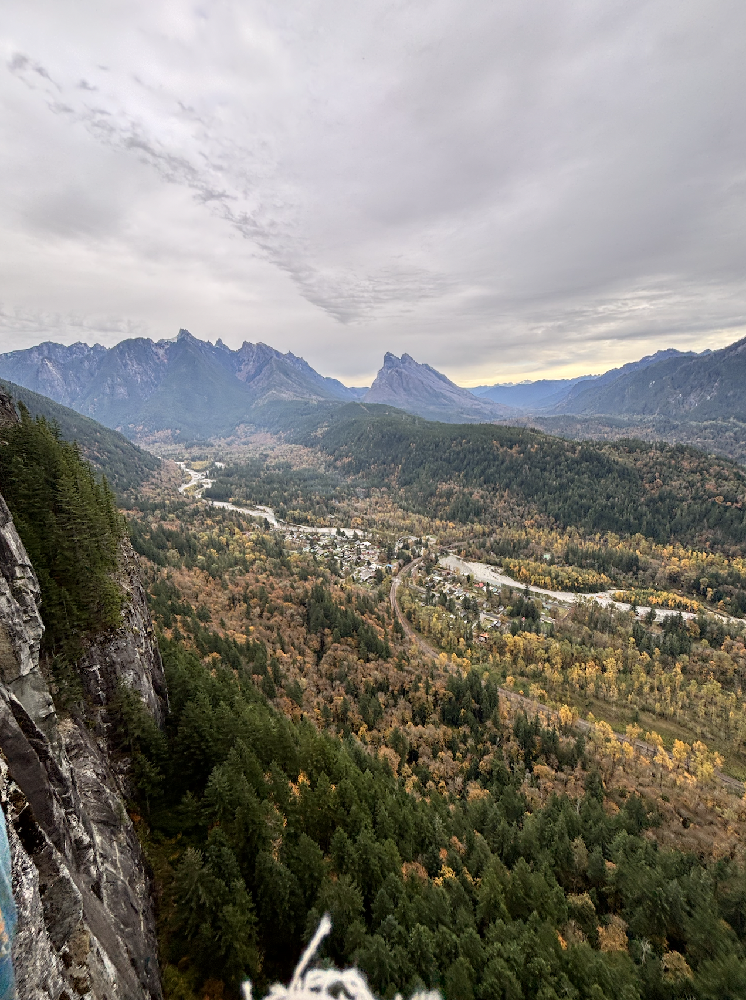
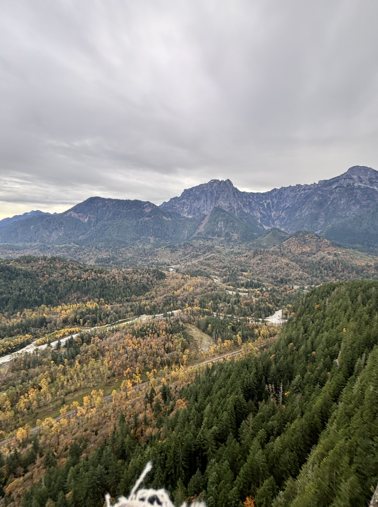
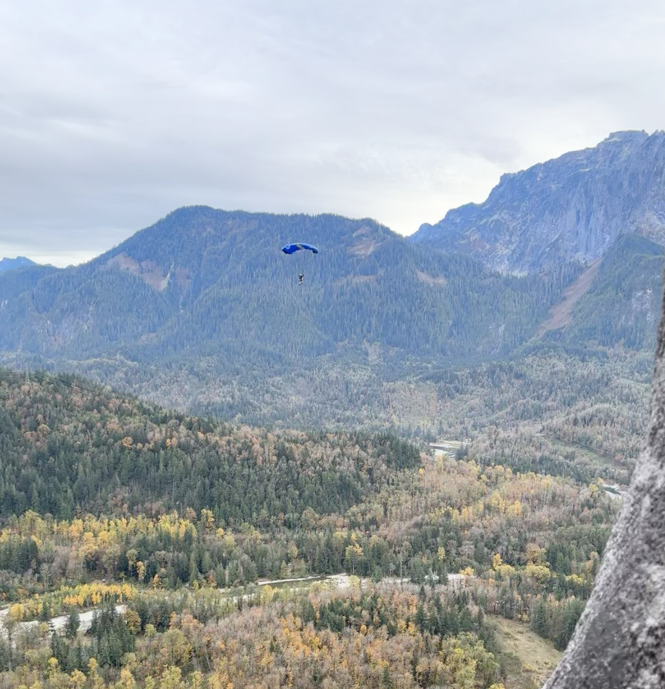

October 24, 2026
Index, WA
5.10c, 5p T, Fell, ****
Emmett picked me up on the way to index and soon we were on the 2 passing through Sultan and Gold Bar. While he headed to the bathroom, there was a guy running around the Reiter lot asking if anyone wanted to play hackey sack. I dont know how this seems to be a recurring theme here. Emmett came back eventually and we learned there was no toilet paper today in the LTW bathroom. So we were off to a great start.


After sorting the gear we headed to the country and then the hike up to Davis Holland. Emmett was going to lead odds while I took evens, which I was psyched about because of the p3 roof pull off the anchor. He started up the first pitch which I followed, and at 5.8+. Finished at a nice ledge

Next was p2, which I had watched some videos about on YouTube. I pulled over a bulge onto a slabby dihedral with two .2-.3 cracks too thin to get fingers in. Here I was pretty gripped. I placed a .3 after some foot slipping and continued on to about 70' of liebacking since the steep thin hands that followed was a bit too thin for me. Whipped on a pretty bomber .75 a few times and I was getting really pumped going up. Eventually there were a few offwidth pods which were fun and ended in nice ledges. Throughout the endurance section I took a few more falls/hangs and made it to the chains. This was a pretty tough pitch for me endurance wise since it was mostly liebacking, but the views were starting to get pretty awesome.

Emmet followed up p2 pretty much crusing and started on the p3 anchors after a quick break. The roof pull required pulling an undercling which was pretty hard to protect due to some interesting crystals formed by the dike running through it. Wish I had gotten a photo. Was definitely a pretty airy move so high above the ground. Following, I got the roof clean which I was psyched about, but hung once on a thin slabby crux. P2 and P3 were honestly stellar and definitely the hardest I've climbed on a trad multipitch before.

That brought us to a nice comfy ledge at the top of Davis holland, and Emmett scored the onsight. We were pretty worked, but decided to continue up the next 3 pitches of Lovin' arms, continuing to the top of the UTW. I started off on P1 which ended up actually being pretty bold. There were some tough face moves before the gear got good, but eventually I found my way into two left leaning hand cracks I could bump hands and feet between. This was a pretty physical pitch as well. I continued on into the chimney where the climbing eased up and belayed from right beneath a chimney

Emmet led up a chimney/offwidth which was pretty awesome and onto a no-feet traverse into some sport moves protected by some cams in pods. This pitch was insane, and pretty unique for trad climbing compared to what I've done so far. I got this pitch clean and was psyched.


We came up to the final pitch which was about 30ft of face at ~5.9 PG13, and after getting pretty worked on the lower pitches we rapped. The position was pretty insane. From the top of the wall the trains and houses looked like miniatures, and the autumn colors and valley were beautiful It was a really awesome climb. On the raps down, I heard a loud whoosh and tucked under a roof in case something had came off the top of the UTW. A few seconds later I saw a parachute open and sail towards the train tracks. After rapping, we started the hike down and headed home.
